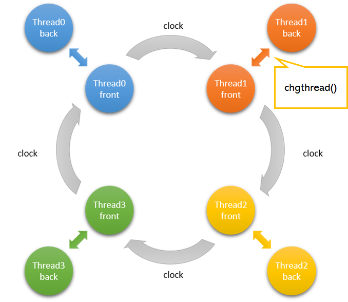

Thread control¶
In this section, We explain PEZY-SCx series processor’s thread control mechanism. The thread mechanism of PEZY-SCx series processor is “fine-grained multi-threading”. Fig. 5 shows thread control mechanism.
There are four threads worked at the same time. They work switching every cycle (thread 0 → thread 1 → thread 2 → thread 3 → thread 0 ...).
Each thread has two kinds of “front thread” and “back thread”, one of which works. This is called “thread pair”.
To switch between “front thread” and “back thread”, use the chgthread() function.
When the original front threads stall (e.g., when loading data from memory), we can hide some of the latency by switching back threads to the front and front threads to the back.

Fig. 5 PEZY-SCx thread control